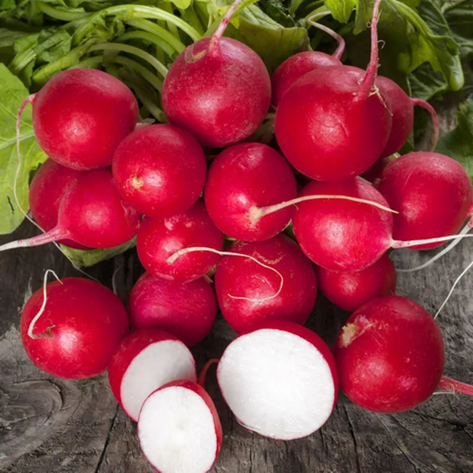

📖 Descrição
O Rabanete Carmesim (Raphanus sativus) é uma hortaliça de crescimento rápido, com raízes arredondadas de coloração vermelho-intensa e polpa branca, crocante e levemente picante.
🌱 Cuidados
- Prefere solo fértil, leve e bem drenado.
- Necessita de irrigação frequente, sem encharcar.
- Desenvolve-se melhor em locais com boa luminosidade.
- O ciclo é curto, permitindo colheita em poucas semanas.
- Evite excesso de calor para obter raízes mais tenras.
🌎 Origem
Originário da Ásia, o rabanete é cultivado em diversas regiões do mundo devido ao seu rápido desenvolvimento e alto valor nutricional.
🐝 Atrai quais polinizadores?
Quando floresce, atrai abelhas, abelhas nativas, borboletas e outros insetos polinizadores importantes para o equilíbrio dos ecossistemas.
🍽️ Parte comestível
Raiz e folhas jovens.
💚 Benefícios para a saúde
- Rico em fibras.
- Fonte de vitamina C.
- Auxilia na digestão.
- Possui ação antioxidante.
- Contribui para uma alimentação saudável e equilibrada.
🌼 Curiosidade
O rabanete é uma das hortaliças de ciclo mais rápido, podendo ser colhido entre 25 e 35 dias após o plantio.
🌍 Importância para o meio ambiente
Seu cultivo favorece a diversificação da horta escolar, melhora a qualidade do solo e, durante a floração, oferece alimento para polinizadores.
🌾 Época de plantio
Pode ser cultivado durante todo o ano em regiões de clima ameno, apresentando melhor desenvolvimento em temperaturas moderadas.
📱 Acesse esta página pelo QR Code

Escaneie o QR Code para acessar esta página pelo celular.